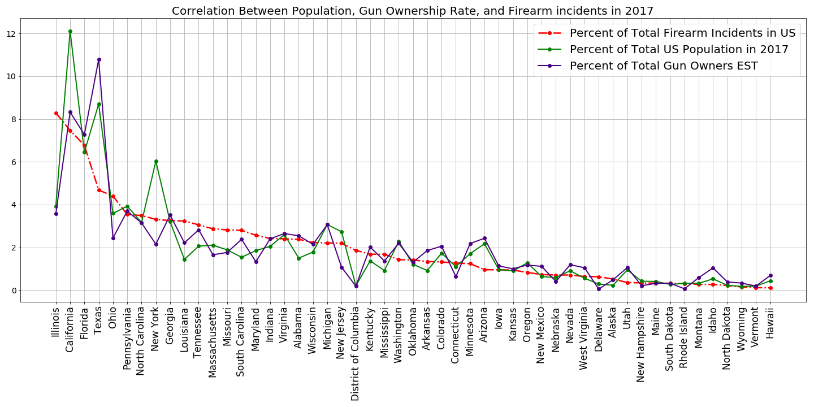

Gun Violence - Gun Ownership & Population
The below analysis is an in depth look at the correlation between state population, estimated gun ownership per capita and gun violence incidents. This analysis focuses only on 2017 data.

Statistics on gun ownership across the U.S. are hard to nail down; the ATF's National Firearms Registration and Transfer Record is not all-inclusive, and some guns go unregistered. But "Injury Prevention," a scholarly journal, has released what may be the closest look yet. Their survey, published in 2015, asked a representative sample of 4,000 adults nationwide whether they own firearms. The findings helped the research group estimate gun ownership rates in each state.

The below bar graph shows the difference between NFA registered firearm data per state and the estimated number of gun owners per state.